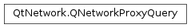

QNetworkProxyQuery¶
Synopsis¶
Functions¶
- def
__eq__(other) - def
__ne__(other) - def
localPort() - def
networkConfiguration() - def
peerHostName() - def
peerPort() - def
protocolTag() - def
queryType() - def
setLocalPort(port) - def
setNetworkConfiguration(networkConfiguration) - def
setPeerHostName(hostname) - def
setPeerPort(port) - def
setProtocolTag(protocolTag) - def
setQueryType(type) - def
setUrl(url) - def
swap(other) - def
url()
Detailed Description¶
The
PySide2.QtNetwork.QNetworkProxyQueryclass is used to query the proxy settings for a socket.
PySide2.QtNetwork.QNetworkProxyQueryholds the details of a socket being created or request being made. It is used byPySide2.QtNetwork.QNetworkProxyandPySide2.QtNetwork.QNetworkProxyFactoryto allow applications to have a more fine-grained control over which proxy servers are used, depending on the details of the query. This allows an application to apply different settings, according to the protocol or destination hostname, for instance.
PySide2.QtNetwork.QNetworkProxyQuerysupports the following criteria for selecting the proxy:
- the type of query
- the local port number to use
- the destination host name
- the destination port number
- the protocol name, such as “http” or “ftp”
- the URL being requested
The destination host name is the host in the connection in the case of outgoing connection sockets. It is the
hostNameparameter passed toQTcpSocket.connectToHost()or the host component of a URL requested withPySide2.QtNetwork.QNetworkRequest.The destination port number is the requested port to connect to in the case of outgoing sockets, while the local port number is the port the socket wishes to use locally before attempting the external connection. In most cases, the local port number is used by listening sockets only (
PySide2.QtNetwork.QTcpSocket) or by datagram sockets (PySide2.QtNetwork.QUdpSocket).The protocol name is an arbitrary string that indicates the type of connection being attempted. For example, it can match the scheme of a URL, like “http”, “https” and “ftp”. In most cases, the proxy selection will not change depending on the protocol, but this information is provided in case a better choice can be made, like choosing an caching HTTP proxy for HTTP-based connections, but a more powerful SOCKSv5 proxy for all others.
The network configuration specifies which configuration to use, when bearer management is used. For example on a mobile phone the proxy settings are likely to be different for the cellular network vs WLAN.
Some of the criteria may not make sense in all of the types of query. The following table lists the criteria that are most commonly used, according to the type of query.
Query type Description TcpSocketNormal sockets requesting a connection to a remote server, like PySide2.QtNetwork.QTcpSocket. The peer hostname and peer port match the values passed toQTcpSocket.connectToHost(). The local port is usually -1, indicating the socket has no preference in which port should be used. The URL component is not used.UdpSocketDatagram-based sockets, which can both send and receive. The local port, remote host or remote port fields can all be used or be left unused, depending on the characteristics of the socket. The URL component is not used. SctpSocketMessage-oriented sockets requesting a connection to a remote server. The peer hostname and peer port match the values passed to QSctpSocket.connectToHost(). The local port is usually -1, indicating the socket has no preference in which port should be used. The URL component is not used.TcpServerPassive server sockets that listen on a port and await incoming connections from the network. Normally, only the local port is used, but the remote address could be used in specific circumstances, for example to indicate which remote host a connection is expected from. The URL component is not used. UrlRequestA more high-level request, such as those coming from PySide2.QtNetwork.QNetworkAccessManager. These requests will inevitably use an outgoing TCP socket, but the this query type is provided to indicate that more detailed information is present in the URL component. For ease of implementation, the URL’s host and port are set as the destination address.SctpServerPassive server sockets that listen on an SCTP port and await incoming connections from the network. Normally, only the local port is used, but the remote address could be used in specific circumstances, for example to indicate which remote host a connection is expected from. The URL component is not used. It should be noted that any of the criteria may be missing or unknown (an empty
PySide2.QtCore.QStringfor the hostname or protocol name, -1 for the port numbers). If that happens, the functions executing the query should make their best guess or apply some implementation-defined default values.
-
class
PySide2.QtNetwork.QNetworkProxyQuery¶ -
class
PySide2.QtNetwork.QNetworkProxyQuery(networkConfiguration, hostname, port[, protocolTag=""[, queryType=TcpSocket]]) -
class
PySide2.QtNetwork.QNetworkProxyQuery(networkConfiguration, requestUrl[, queryType=UrlRequest]) -
class
PySide2.QtNetwork.QNetworkProxyQuery(networkConfiguration, bindPort[, protocolTag=""[, queryType=TcpServer]]) -
class
PySide2.QtNetwork.QNetworkProxyQuery(other) -
class
PySide2.QtNetwork.QNetworkProxyQuery(hostname, port[, protocolTag=""[, queryType=TcpSocket]]) -
class
PySide2.QtNetwork.QNetworkProxyQuery(requestUrl[, queryType=UrlRequest]) -
class
PySide2.QtNetwork.QNetworkProxyQuery(bindPort[, protocolTag=""[, queryType=TcpServer]]) Parameters: - networkConfiguration –
PySide2.QtNetwork.QNetworkConfiguration - requestUrl –
PySide2.QtCore.QUrl - bindPort –
PySide2.QtCore.quint16 - other –
PySide2.QtNetwork.QNetworkProxyQuery - hostname – unicode
- port –
PySide2.QtCore.int - queryType –
PySide2.QtNetwork.QNetworkProxyQuery.QueryType - protocolTag – unicode
Constructs a default
PySide2.QtNetwork.QNetworkProxyQueryobject. By default, the query type will beQNetworkProxyQuery.TcpSocket.Constructs a
PySide2.QtNetwork.QNetworkProxyQueryof typequeryTypeand sets the protocol tag to beprotocolTag. This constructor is suitable forQNetworkProxyQuery.TcpSocketqueries, because it sets the peer hostname tohostnameand the peer’s port number toport. The specifiednetworkConfigurationparameter is ignored.Constructs a
PySide2.QtNetwork.QNetworkProxyQuerywith the URLrequestUrland sets the query type toqueryType. The specifiednetworkConfigurationparameter is ignored.See also
PySide2.QtNetwork.QNetworkProxyQuery.protocolTag()PySide2.QtNetwork.QNetworkProxyQuery.peerHostName()PySide2.QtNetwork.QNetworkProxyQuery.peerPort()PySide2.QtNetwork.QNetworkProxyQuery.networkConfiguration()Constructs a
PySide2.QtNetwork.QNetworkProxyQueryof typequeryTypeand sets the protocol tag to beprotocolTag. This constructor is suitable forQNetworkProxyQuery.TcpSocketqueries because it sets the local port number tobindPort. The specifiednetworkConfigurationparameter is ignored.Note that
bindPortis of type quint16 to indicate the exact port number that is requested. The value of -1 (unknown) is not allowed in this context.See also
PySide2.QtNetwork.QNetworkProxyQuery.localPort()PySide2.QtNetwork.QNetworkProxyQuery.networkConfiguration()Constructs a
PySide2.QtNetwork.QNetworkProxyQueryobject that is a copy ofother.Constructs a
PySide2.QtNetwork.QNetworkProxyQueryof typequeryTypeand sets the protocol tag to beprotocolTag. This constructor is suitable forQNetworkProxyQuery.TcpSocketqueries, because it sets the peer hostname tohostnameand the peer’s port number toport.Constructs a
PySide2.QtNetwork.QNetworkProxyQuerywith the URLrequestUrland sets the query type toqueryType.See also
PySide2.QtNetwork.QNetworkProxyQuery.protocolTag()PySide2.QtNetwork.QNetworkProxyQuery.peerHostName()PySide2.QtNetwork.QNetworkProxyQuery.peerPort()Constructs a
PySide2.QtNetwork.QNetworkProxyQueryof typequeryTypeand sets the protocol tag to beprotocolTag. This constructor is suitable forQNetworkProxyQuery.TcpSocketqueries because it sets the local port number tobindPort.Note that
bindPortis of type quint16 to indicate the exact port number that is requested. The value of -1 (unknown) is not allowed in this context.- networkConfiguration –
-
PySide2.QtNetwork.QNetworkProxyQuery.QueryType¶ Describes the type of one
PySide2.QtNetwork.QNetworkProxyQueryquery.Constant Description QNetworkProxyQuery.TcpSocket a normal, outgoing TCP socket QNetworkProxyQuery.UdpSocket a datagram-based UDP socket, which could send to multiple destinations QNetworkProxyQuery.SctpSocket a message-oriented, outgoing SCTP socket QNetworkProxyQuery.TcpServer a TCP server that listens for incoming connections from the network QNetworkProxyQuery.UrlRequest a more complex request which involves loading of a URL QNetworkProxyQuery.SctpServer an SCTP server that listens for incoming connections from the network
-
PySide2.QtNetwork.QNetworkProxyQuery.localPort()¶ Return type: PySide2.QtCore.intReturns the port number of the socket that will accept incoming packets from remote servers or -1 if the port is not known.
-
PySide2.QtNetwork.QNetworkProxyQuery.networkConfiguration()¶ Return type: PySide2.QtNetwork.QNetworkConfigurationReturns QNetworkConfiguration().
-
PySide2.QtNetwork.QNetworkProxyQuery.__ne__(other)¶ Parameters: other – PySide2.QtNetwork.QNetworkProxyQueryReturn type: PySide2.QtCore.boolReturns
trueif thisPySide2.QtNetwork.QNetworkProxyQueryobject does not contain the same data asother.
-
PySide2.QtNetwork.QNetworkProxyQuery.__eq__(other)¶ Parameters: other – PySide2.QtNetwork.QNetworkProxyQueryReturn type: PySide2.QtCore.boolReturns
trueif thisPySide2.QtNetwork.QNetworkProxyQueryobject contains the same data asother.
-
PySide2.QtNetwork.QNetworkProxyQuery.peerHostName()¶ Return type: unicode Returns the host name or IP address being of the outgoing connection being requested, or an empty string if the remote hostname is not known.
If the query type is
QNetworkProxyQuery.UrlRequest, this function returns the host component of the URL being requested.
-
PySide2.QtNetwork.QNetworkProxyQuery.peerPort()¶ Return type: PySide2.QtCore.intReturns the port number for the outgoing request or -1 if the port number is not known.
If the query type is
QNetworkProxyQuery.UrlRequest, this function returns the port number of the URL being requested. In general, frameworks will fill in the port number from their default values.
-
PySide2.QtNetwork.QNetworkProxyQuery.protocolTag()¶ Return type: unicode Returns the protocol tag for this
PySide2.QtNetwork.QNetworkProxyQueryobject, or an emptyPySide2.QtCore.QStringin case the protocol tag is unknown.In the case of queries of type
QNetworkProxyQuery.UrlRequest, this function returns the value of the scheme component of the URL.
-
PySide2.QtNetwork.QNetworkProxyQuery.queryType()¶ Return type: PySide2.QtNetwork.QNetworkProxyQuery.QueryTypeReturns the query type.
-
PySide2.QtNetwork.QNetworkProxyQuery.setLocalPort(port)¶ Parameters: port – PySide2.QtCore.intSets the port number that the socket wishes to use locally to accept incoming packets from remote servers to
port. The local port is most often used with theQNetworkProxyQuery.TcpServerandQNetworkProxyQuery.UdpSocketquery types.Valid values are 0 to 65535 (with 0 indicating that any port number will be acceptable) or -1, which means the local port number is unknown or not applicable.
In some circumstances, for special protocols, it’s the local port number can also be used with a query of type
QNetworkProxyQuery.TcpSocket. When that happens, the socket is indicating it wishes to use the port numberportwhen connecting to a remote host.
-
PySide2.QtNetwork.QNetworkProxyQuery.setNetworkConfiguration(networkConfiguration)¶ Parameters: networkConfiguration – PySide2.QtNetwork.QNetworkConfigurationThis function does nothing. The specified
networkConfigurationparameter is ignored.
-
PySide2.QtNetwork.QNetworkProxyQuery.setPeerHostName(hostname)¶ Parameters: hostname – unicode Sets the hostname of the outgoing connection being requested to
hostname. An empty hostname can be used to indicate that the remote host is unknown.The peer host name can also be used to indicate the expected source address of an incoming connection in the case of
QNetworkProxyQuery.UdpSocketorQNetworkProxyQuery.TcpServerquery types.
-
PySide2.QtNetwork.QNetworkProxyQuery.setPeerPort(port)¶ Parameters: port – PySide2.QtCore.intSets the requested port number for the outgoing connection to be
port. Valid values are 1 to 65535, or -1 to indicate that the remote port number is unknown.The peer port number can also be used to indicate the expected port number of an incoming connection in the case of
QNetworkProxyQuery.UdpSocketorQNetworkProxyQuery.TcpServerquery types.
-
PySide2.QtNetwork.QNetworkProxyQuery.setProtocolTag(protocolTag)¶ Parameters: protocolTag – unicode Sets the protocol tag for this
PySide2.QtNetwork.QNetworkProxyQueryobject to beprotocolTag.The protocol tag is an arbitrary string that indicates which protocol is being talked over the socket, such as “http”, “xmpp”, “telnet”, etc. The protocol tag is used by the backend to return a request that is more specific to the protocol in question: for example, a HTTP connection could be use a caching HTTP proxy server, while all other connections use a more powerful SOCKSv5 proxy server.
-
PySide2.QtNetwork.QNetworkProxyQuery.setQueryType(type)¶ Parameters: type – PySide2.QtNetwork.QNetworkProxyQuery.QueryTypeSets the query type of this object to be
type.
-
PySide2.QtNetwork.QNetworkProxyQuery.setUrl(url)¶ Parameters: url – PySide2.QtCore.QUrlSets the URL component of this
PySide2.QtNetwork.QNetworkProxyQueryobject to beurl. Setting the URL will also set the protocol tag, the remote host name and port number. This is done so as to facilitate the implementation of the code that determines the proxy server to be used.
-
PySide2.QtNetwork.QNetworkProxyQuery.swap(other)¶ Parameters: other – PySide2.QtNetwork.QNetworkProxyQuerySwaps this network proxy query instance with
other. This function is very fast and never fails.
-
PySide2.QtNetwork.QNetworkProxyQuery.url()¶ Return type: PySide2.QtCore.QUrlReturns the URL component of this
PySide2.QtNetwork.QNetworkProxyQueryobject in case of a query of typeQNetworkProxyQuery.UrlRequest.
© 2018 The Qt Company Ltd. Documentation contributions included herein are the copyrights of their respective owners. The documentation provided herein is licensed under the terms of the GNU Free Documentation License version 1.3 as published by the Free Software Foundation. Qt and respective logos are trademarks of The Qt Company Ltd. in Finland and/or other countries worldwide. All other trademarks are property of their respective owners.